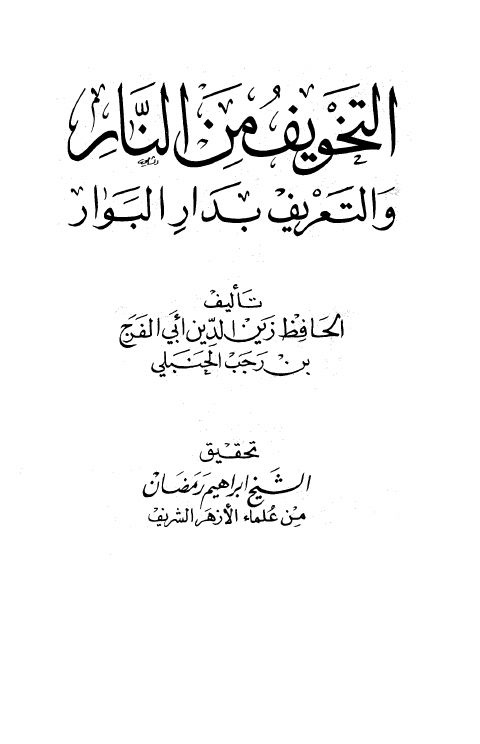

Downloads need an internet connection.
التخويف من النار والتعريف بحال دار البوار - ت. رمضان
Authors: ابن رجب الحنبلي
Editors: إبراهيم رمضان
Publishers: دار الندوة
**▫️ العنوان: التخويف من النار والتعريف بحال دار البوار - ت. رمضان** ▪️ المؤلف: #عبد_الرحمن_بن_أحمد_بن_رجب_الحنبلي ▫️ المحقق: #إبراهيم_رمضان ▪️ الناشر: #دار_الندوة ▫️ الطبعة: 1 ▪️ عدد الأجزاء: 1 ▫️ الصفحات: 280 ▪️ نوع الوعاء: #كتاب ▫️ التصنيف الرئيسي: #العقيدة_والمذاهب_والأديان ▪️ التصنيف الفرعي: #التوحيد ۪